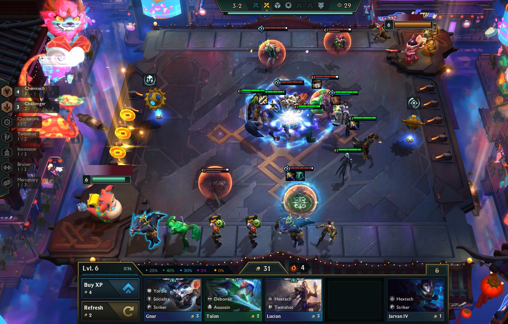

Teamfight Tactics, or TFT, is a Free Strategy and Auto Chess video game developed and published by Riot Games. The game takes place in the universe of League of Legends and is based on Dota Auto Chess, where players compete online against seven other opponents, building a team to be the last one standing.
You could see TFT as a cards game, just strategy and a little bit of luck needed. Check out their official website.
